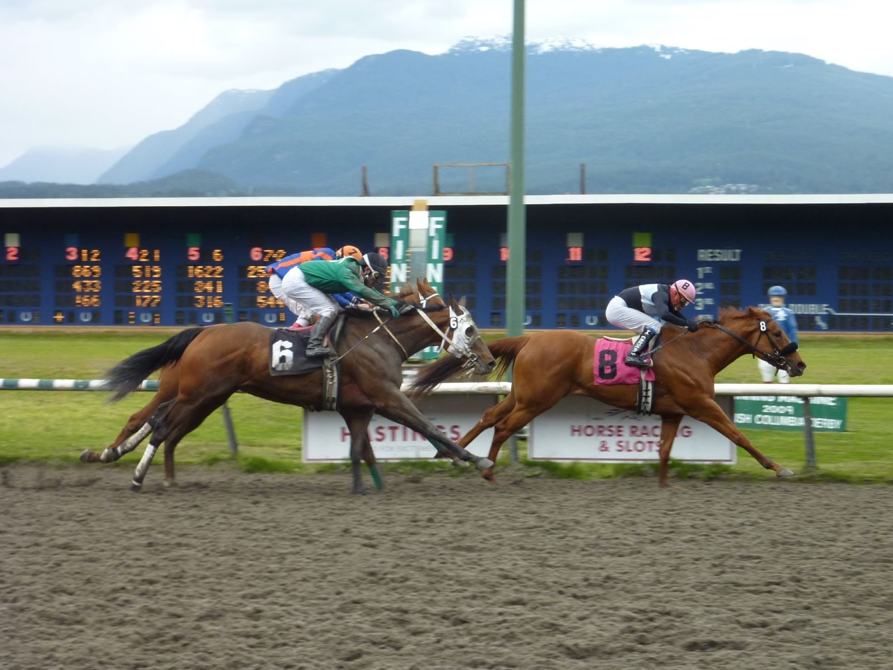

Hoy a las 18:00 cierra el plazo de pre-entries para el Breeders' Cup 2026 de Keeneland
El plazo de pre-entries para el Breeders' Cup 2026 se cierra este lunes a las 12:00 del mediodía (hora de Lexington, Kentucky), las 18:00 en España.

La organización publicará la lista oficial de pre-inscritos este miércoles 21 de octubre, de nuevo a las 12:00 hora local, en una emisión en directo por FanDuel TV. La ventana de entries definitivas se cerrará el lunes 26 de octubre a las 10:00 de la mañana.
El acto del miércoles sirve también para fijar las primeras cuotas sobre los campos potenciales. En la Breeders' Cup Classic, la carrera más rica del fin de semana, con 7 millones de dólares, los nombres que se repiten en las previas de las últimas semanas son los del campeón de los Travers de 2025, Sovereignty, el ganador del Jockey Club Gold Cup, Forever Young, procedente de Japón, y Knightsbridge, que acaba de completar el camino con un galope de preparación en Santa Anita. Magnitude, otro de los nombres barajados, cronometró el mejor tiempo de los movimientos de la mañana del sábado en Keeneland.
El meeting de otoño de Keeneland, que se celebra desde el 2 de octubre, sirvió este año de puente natural con el campeonato mundial. El cuadro de otoño incluye ocho carreras con etiqueta Win and You're In, de las que ya se han resuelto siete. La última, el Fayette Stakes del sábado 25, cerrará el calendario de preparación antes del inicio del campeonato cinco días después.
Keeneland celebra en 2026 su 90.º aniversario y se convierte en el segundo hipódromo de Kentucky que acoge dos veces el Breeders' Cup, tras Churchill Downs. La bolsa de los veintidós stakes del meeting de otoño asciende a 10,85 millones de dólares, cifra récord para la temporada.
Por Martín Larrañeta